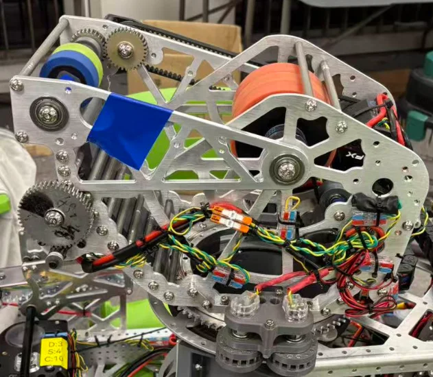

Inside the shooter
The shooter brings together a ball-feeding mechanism, flywheels, an adjustable hood, and a rotating turret. I worked on the shooter group, translating mechanical ideas into CAD models and physical assemblies.
01 / MECHANICAL DESIGN / FRC
Making motion work.
From a CAD model to a working shooter: designing, building, testing, and finding the small details that make a robot reliable.

THE STORY
The shooter brings together a ball-feeding mechanism, flywheels, an adjustable hood, and a rotating turret. I worked on the shooter group, translating mechanical ideas into CAD models and physical assemblies.
When balls became stuck during early tests, I added belt-driven rollers to keep them moving through the mechanism. I also explored differences in wheel speed to give the ball backspin for close-range shots.
During troubleshooting, I traced excessive flywheel resistance to a washer pressing against a bearing. Checking the assembly against the CAD model helped connect a small mechanical detail with the performance of the entire system.